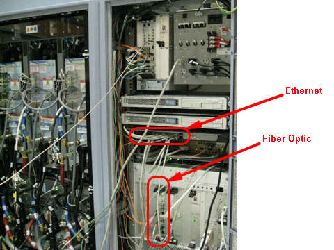

Illustration 5: Infiniband and Ethernet Switch Connections - 4100

Illustration 5: Infiniband and Ethernet Switch Connections - 4100
Illustration 6: Fiber Optic and Ethernet Switch Connections - 4170

Table 1: ICN Wiring Matrix
| Connec tion Item | ICN 4170 | ICN 4100 | ||
| 32-Channel | 16-Channel | 32-Channel | 16-Channel | |
| Power Cords | 2 | 2 | 4 | 2 |
| Ethernet | 3 | 3 | 6 | 3 |
| Duplex - Fiber Optic | 2 | 1 | 2 | 1 |
| Single Fiber Optic | 2 | 1 | 2 | 1 |
| Infiniband - Jumper | N/A | N/A | 1 | N/A |
| Fiber Optic - Jumper | N/A | N/A | 1 | N/A |
Illustration 7: Ethernet and Fiber Optic Connections
